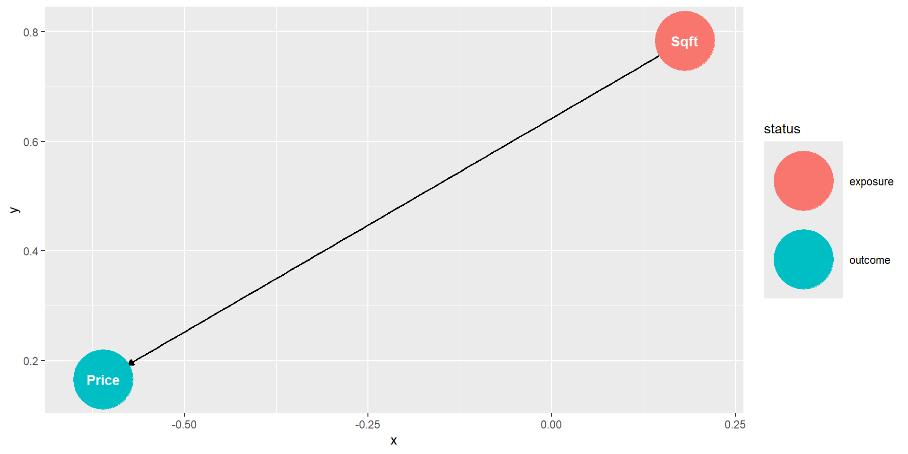

Code
Wage SexFem
1 3.10 1
2 3.24 1
3 6.00 0
4 8.75 0
5 11.25 0
6 5.00 1Univariate
Reviewing the basic idea behind linear regression
Learning how how to measure predictive quality with Mean Square Error (\(MSE\)).
Understanding the role of parameters in a linear regression model (applies also to other models)
Calculating optimal regression parameters using OLS
Finding optimal regression parameters by trial and error
Finding optimal regression parameters with lm and tidymodels.
Distinguish between unfitted and fitted models
Using tidymodels to split observations randomly into a training and testing dataset.
Using tidymodels to analyze housing prices.
Two Sample t-test
data: Wage by SexFem
t = 7.6562, df = 378, p-value = 1.617e-13
alternative hypothesis: true difference in means between group 0 and group 1 is not equal to 0
95 percent confidence interval:
2.122663 3.589717
sample estimates:
mean in group 0 mean in group 1
7.685918 4.829728 The estimated difference between female and male salary is: -2.85619\[\widehat{Wage}=\beta_1 Sex_{Fem}+ \beta_2\]
\[\widehat{Wage}=\beta_1 Sex_{Fem}+ \beta_2\]
Call:
lm(formula = Wage ~ SexFem, data = DataWage)
Residuals:
Min 1Q Median 3Q Max
-6.0159 -1.9313 -0.8297 1.4203 17.2941
Coefficients:
Estimate Std. Error t value Pr(>|t|)
(Intercept) 7.6859 0.2596 29.608 < 2e-16 ***
SexFem -2.8562 0.3731 -7.656 1.62e-13 ***
---
Signif. codes: 0 '***' 0.001 '**' 0.01 '*' 0.05 '.' 0.1 ' ' 1
Residual standard error: 3.634 on 378 degrees of freedom
Multiple R-squared: 0.1343, Adjusted R-squared: 0.132
F-statistic: 58.62 on 1 and 378 DF, p-value: 1.617e-13Univariate OLS (simple OLS) with a real estate dataset
Data Description:
King County House Sale dataset (Kaggle 2015). House sales prices from May 2014 to May 2015 for King County in Washington State.
Simplication:
Several predictor variables, but for now we use only \(Sqft\)
We will only use 100 randomly chosen observations from the total of 21,613 observations.
First six observations training data:
Price Sqft
1 517000 1180
2 236000 1300
3 490000 2800
4 129000 1150
5 257000 1400
6 312500 870A house with average properties should be predicted with an average price!
The mean square footage of a house in King county is: 1956.7The mean price of a house in King county is: 521294.2How does the Unfitted Model Looks Like?
\[ \underbrace{\widehat{Price}}_\widehat{y}=\underbrace{\beta_1}_m \underbrace{Sqft}_x + \underbrace{\beta_0}_b \]
Fitting the Model with lm()
Unfitted Model: \[ \underbrace{\widehat{Price}}_\widehat{y}=\underbrace{\beta_1}_m \underbrace{Sqft}_x + \underbrace{\beta_0}_b \]
Call:
lm(formula = Price ~ Sqft, data = Data100Houses)
Coefficients:
(Intercept) Sqft
52509.1 239.6 Fitted Model: \[ \underbrace{\widehat{Price}}_\widehat{y}=\underbrace{240}_m \cdot\underbrace{Sqft}_x + \underbrace{52509}_b \]
# A tibble: 2 × 5
term estimate std.error statistic p.value
<chr> <dbl> <dbl> <dbl> <dbl>
1 (Intercept) 52509. 64183. 0.818 4.15e- 1
2 Sqft 240. 30.6 7.84 5.67e-12\[ \begin{align} \widehat{Price}&=240 \cdot Sqft + 52509\\ (+240)&=240\cdot (+1) + (+0)\\ (+480)&=240\cdot (+2) + (+0)\\ (+720)&=240\cdot (+3) + (+0) \end{align} \] For each extra \(Sqft\) the predicted price increases by $240
The variable \(Sqft\) is significant. I.e., the probability that the related coefficient \(\beta_1\) equals zero is extremely small.
The Data Table
DataMockup=import("https://ai.lange-analytics.com/data/DataStudyTimeMockup.rds")
kbl(DataMockup |> mutate(i=1:5) |> select(i,everything()),
caption="Mockup Training Dataset")|>
add_header_above(c(" ", "y", "x"), escape=F) |>
kable_styling(bootstrap_options=c("striped","hover"), full_width = F, position="center")
y
|
x
|
|
|---|---|---|
| i | Grade | StudyTime |
| 1 | 65 | 2 |
| 2 | 82 | 3 |
| 3 | 93 | 7 |
| 4 | 93 | 8 |
| 5 | 83 | 4 |
The Regression:
\[ \widehat{y}_{i} = \beta_{1}x_{i}+\beta_{2} \]
\[ \widehat{Grade}_{i} = \beta_{1}StudyTime_{i}+\beta_{2} \]
The Goal
Find values for \(\beta_1\) and \(\beta_2\) that minimize the prediction errors \[(\widehat{y}_{i}-y_i)^2\] \[(\widehat{Grade}_{i}-Grade_i)^2\]
Copy the code from the code-section of the slide into an R script and try to adjust \(\beta_1\) and \(\beta_1\) to get the best prediction equation.
\[ \widehat{y}_{i} = \beta_{1}x_{i}+\beta_{2} \] \[ \widehat{Grade}_{i} = \beta_{1}StudyTime_{i}+\beta_{2} \]
library(rio)
DataMockup=import("https://ai.lange-analytics.com/data/DataStudyTimeMockup.rds")
Beta1=0
Beta2=mean(DataMockup$Grade)- Beta1*mean(DataMockup$StudyTime)
cat("Beta2 ensuring avg. StudyTime leads to avg. Grade prediction:", Beta2)
source("https://ai.lange-analytics.com/source/RegrLinePlot4Slides.R")The Regression:
\[ \widehat{y}_{i} = \beta_{1}x_{i}+\beta_{2} \] \[ \widehat{Grade}_{i} = \beta_{1}StudyTime_{i}+\beta_{2} \]
The Goal
Find values for \(\beta_0\) and \(\beta_1\) that minimize the individual (squared) prediction errors: \[(\widehat{y}_{i}-y_i)^2\] \[(\widehat{Grade}_{i}-Grade_i)^2\]
The Data Diagram
Model123=lm(Grade~StudyTime, data=DataMockup)
PredGrade=predict(Model123, DataMockup)
ggplot(DataMockup, aes(x=StudyTime,y=Grade)) +
geom_line(aes(y=PredGrade), color="red", size=2.7)+
geom_point(size=5, color="blue")+
geom_point(aes(y=PredGrade), color="black", size=2.7)+
geom_segment(aes(x = StudyTime, y = PredGrade,
xend = StudyTime, yend = Grade),size=1.2)+
scale_x_continuous("Study Time", breaks=seq(1,8))+
scale_y_continuous(limits=c(65,110), breaks=seq(60,100,5))
Note, when the data are given (i.e., \(x_i\) and \(y_i\) are given), the \(MSE\) depends only on the choice of \(\beta_1\) and \(\beta_2\) »
Function Call:
Function Definition:»
We can use unsystematic trial and error.
We can use a systematic trial and error process.
Calculate optimal values for the parameters (the \(\beta s\)) based on Ordinary Least Squares (OLS) using two formulas (Note, this method works only for linear regression)
Grid Search (aka Brute Force):
FctMSE() command to calculate a \(MSE\) for each \(\beta\) pair.Optimizer: Use the R build-in optimizer. Push the start values for \(\beta_1\) and \(\beta_2\) together with the data to the optimizer as arguments. The rest is done by the optimizer.
See the R script in the footnote to see both algorithms in action.»
y
|
x
|
y x
|
x x
|
|
|---|---|---|---|---|
| i | Grade | StudyTime | GradeXStudyTime | StudyTimeSquared |
| 1 | 65 | 2 | 130 | 4 |
| 2 | 82 | 3 | 246 | 9 |
| 3 | 93 | 7 | 651 | 49 |
| 4 | 93 | 8 | 744 | 64 |
| 5 | 83 | 4 | 332 | 16 |
| Grade | StudyTime | GradeXStudyTime | StudyTimeSquared |
|---|---|---|---|
| 416 | 24 | 2103 | 142 |
Unfitted Model
\[Grade=\beta_1 \cdot StudyTime + \beta_2\]
Fitted Model
\[Grade=3.96 \cdot StudyTime + 64.18\] Coefficient for \(StudyTime\) (\(\beta_1\)) should be positive.
Call:
lm(formula = Grade ~ StudyTime, data = DataMockup)
Residuals:
1 2 3 4 5
-7.104 5.933 1.082 -2.881 2.970
Coefficients:
Estimate Std. Error t value Pr(>|t|)
(Intercept) 64.179 6.060 10.591 0.0018 **
StudyTime 3.963 1.137 3.485 0.0399 *
---
Signif. codes: 0 '***' 0.001 '**' 0.01 '*' 0.05 '.' 0.1 ' ' 1
Residual standard error: 5.887 on 3 degrees of freedom
Multiple R-squared: 0.8019, Adjusted R-squared: 0.7359
F-statistic: 12.14 on 1 and 3 DF, p-value: 0.03992\[Grade=3.96 \cdot StudyTime + 64.18\]
1 2 3
68.14179 72.10448 76.06716 Interpretation of \(\beta_1=3.96\):
From the formula: If \(StudyTime\) increases, Grade increases. -> makes sense!
From the formula: Quantitative impact: If \(StudyTime\) increases by one unit, Grade increases by \(3.96\) units.
From the prediction: Above we predicted \(Grade\) for \(StudyTime\)s of 1,2,3, which confirms point 1) and 2).
\[Grade=3.96 \cdot StudyTime + 64.18\] Generating the predictions:
\[Grade=3.96 \cdot StudyTime + 64.18\] Augmenting the predictions to the data frame:
Data Description:
-We only use Sqft as predictor variable for now
Data:
Unfitted Model:
\[\widehat{Price}=\beta_1 Sqft + \beta_2\] Directed Acyclic Graphs (causal graphs):
Splitting in Training and Testing Datasets
DataTrain
Price Sqft
1 265000 1400
2 157340 900
3 242025 1400
4 207000 1980
5 265000 1010
6 260000 2390DataTest
Run the Analysis with lm()
library(rio)
DataHousing =
import("https://ai.lange-analytics.com/data/HousingDataSmall.csv")
library(tidymodels)
Split7030=initial_split(0.7,data=DataHousing, strata = Price, breaks = 5)
DataTrain=training(Split7030)
DataTest=testing(Split7030)
ModelHouses=lm(Price ~ Sqft, data=DataTrain)
summary(ModelHouses)
Call:
lm(formula = Price ~ Sqft, data = DataTrain)
Residuals:
Min 1Q Median 3Q Max
-620736 -148940 -12352 110689 1774751
Coefficients:
Estimate Std. Error t value Pr(>|t|)
(Intercept) -60769.92 34065.62 -1.784 0.0753 .
Sqft 295.89 15.42 19.191 <2e-16 ***
---
Signif. codes: 0 '***' 0.001 '**' 0.01 '*' 0.05 '.' 0.1 ' ' 1
Residual standard error: 257700 on 347 degrees of freedom
Multiple R-squared: 0.5149, Adjusted R-squared: 0.5135
F-statistic: 368.3 on 1 and 347 DF, p-value: < 2.2e-16The augment() command first predicts and then augments the results to the related data frame
# A tibble: 6 × 8
Price Sqft .fitted .resid .hat .sigma .cooksd .std.resid
<int> <int> <dbl> <dbl> <dbl> <dbl> <dbl> <dbl>
1 265000 1400 353475. -88475. 0.00424 258053. 0.000252 -0.344
2 157340 900 205530. -48190. 0.00736 258084. 0.000131 -0.188
3 242025 1400 353475. -111450. 0.00424 258027. 0.000400 -0.433
4 280000 1700 442242. -162242. 0.00323 257949. 0.000645 -0.631
5 207000 1980 525091. -318091. 0.00287 257528. 0.00220 -1.24
6 226500 1560 400817. -174317. 0.00362 257926. 0.000835 -0.678# A tibble: 6 × 8
Price Sqft .fitted .resid .hat .sigma .cooksd .std.resid
<int> <int> <dbl> <dbl> <dbl> <dbl> <dbl> <dbl>
1 265000 1400 353475. -88475. 0.00424 258053. 0.000252 -0.344
2 157340 900 205530. -48190. 0.00736 258084. 0.000131 -0.188
3 242025 1400 353475. -111450. 0.00424 258027. 0.000400 -0.433
4 280000 1700 442242. -162242. 0.00323 257949. 0.000645 -0.631
5 207000 1980 525091. -318091. 0.00287 257528. 0.00220 -1.24
6 226500 1560 400817. -174317. 0.00362 257926. 0.000835 -0.678Draw a DAG (with R or by hand)
Mark if the effects in the DAG are expected to be positive or negative
Write down the formula for the unfitted model. Such as: \[Price=\beta_1 Sqft + \beta_2\]
Run the regression
Substitute the \(\beta s\) in the formula with the values you got from the regression.
Sanity test: Are the signs (positive/negative) what you expected. If not, the related variable does not belong in your model
Interpret the \(\beta (s)\). E.g., if predictor variable increases by one unit outcome increases by \(\beta\) units. Note, the intercept coefficient cannot be interpreted in almost all cases!
Check if P value is low enough (e.g., smaller than 0.05=5%). This is the probability for the related coefficient to be 0 and thus irrelevant. You want a low probability for that event. If P value is too high the related variable does not belong in your model. Note, no need to interpret the P for the intercept.
Now it is your turn. Pick a value from the housing data set and run a univariate regression to predict the price.